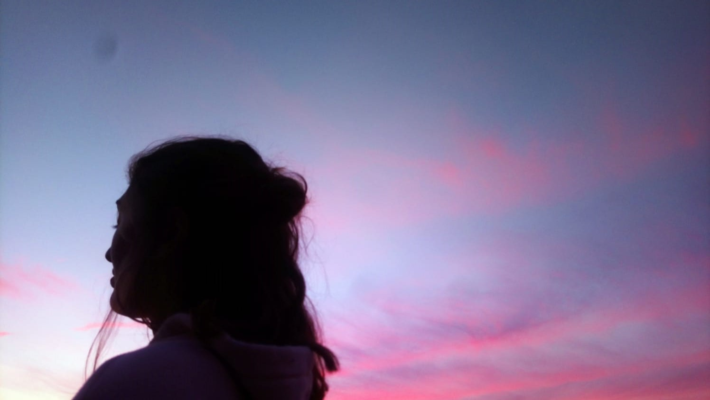
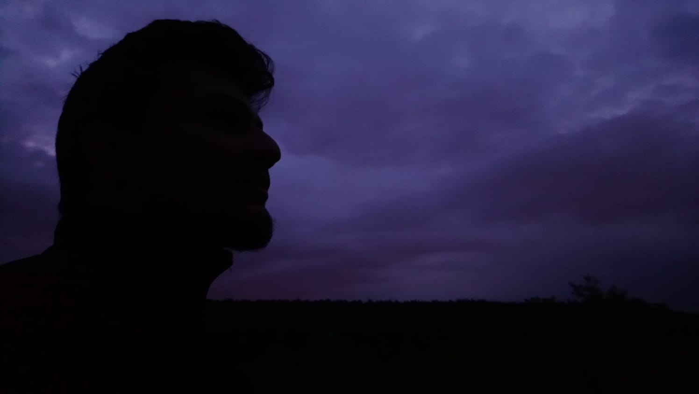
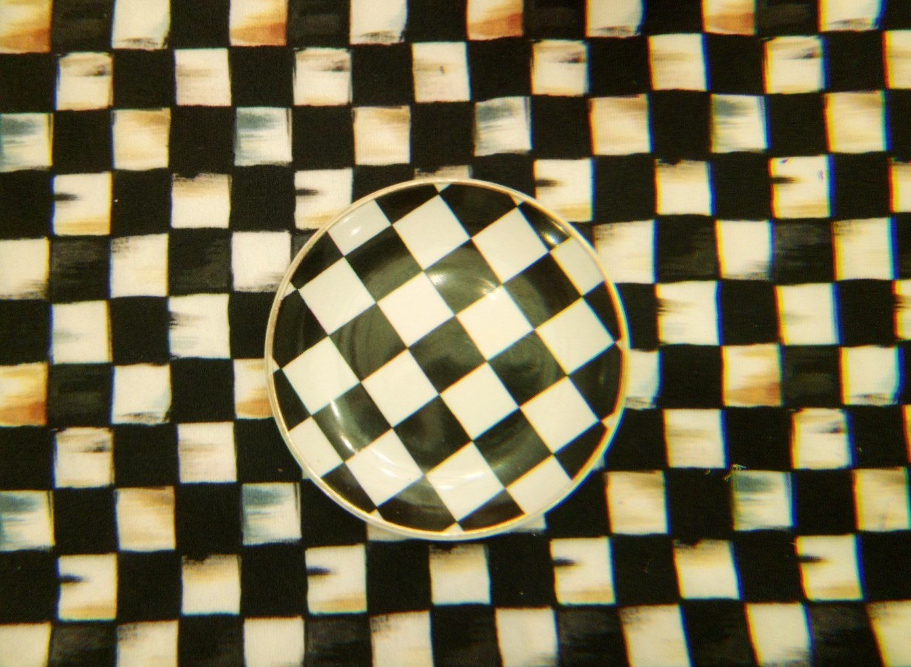
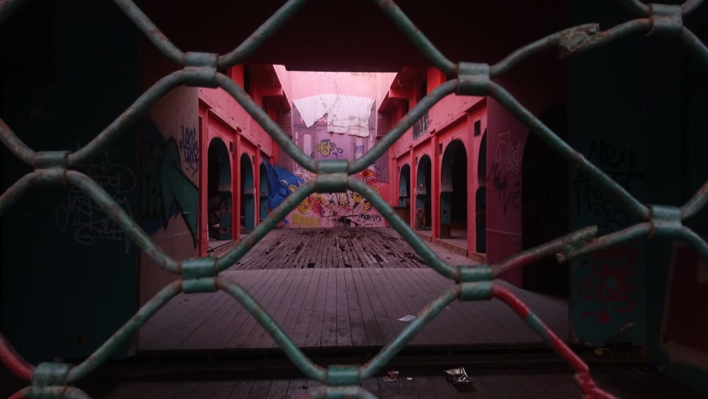
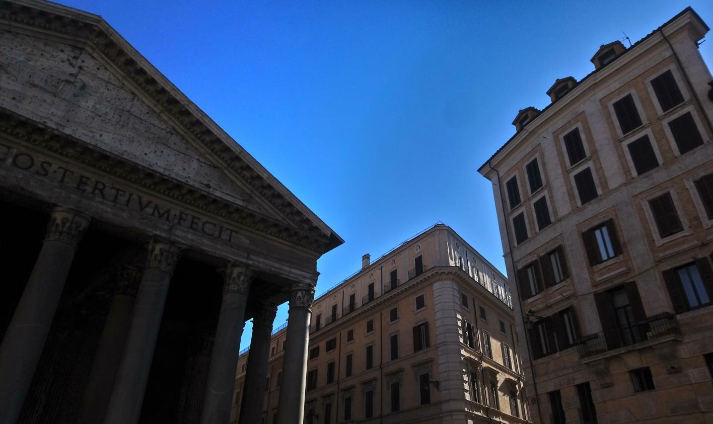

Taking photographs, and analyzing them have been one of the biggest parts of my life. I have grown
in a photographer family; both of my parents are professional photographers. That's the biggest reason
behind my interest to photography.
I prefer to took pictures of different people at negative light.
 I try to see little details around me.

Also I like to take pictures the places where I travel, by using different angles.
 Don't forget to visit 'Travelling' page!
If you want to see more photos, visit my Instagram page.